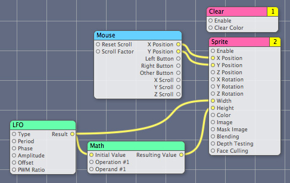
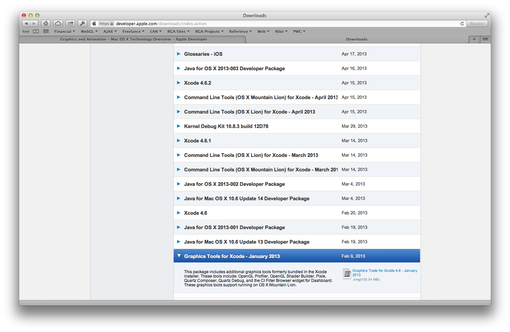
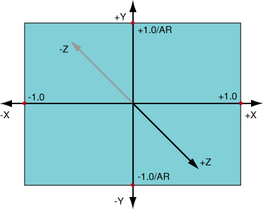

What is Quartz Composer?
Visual programming environment for processing and rendering graphical data.

Download from developer.apple.com

Facebook Home
- "You don't design something like Facebook Home using Photoshop."
- Introduced by Mike Matas
Quartz Composer coordinate system
